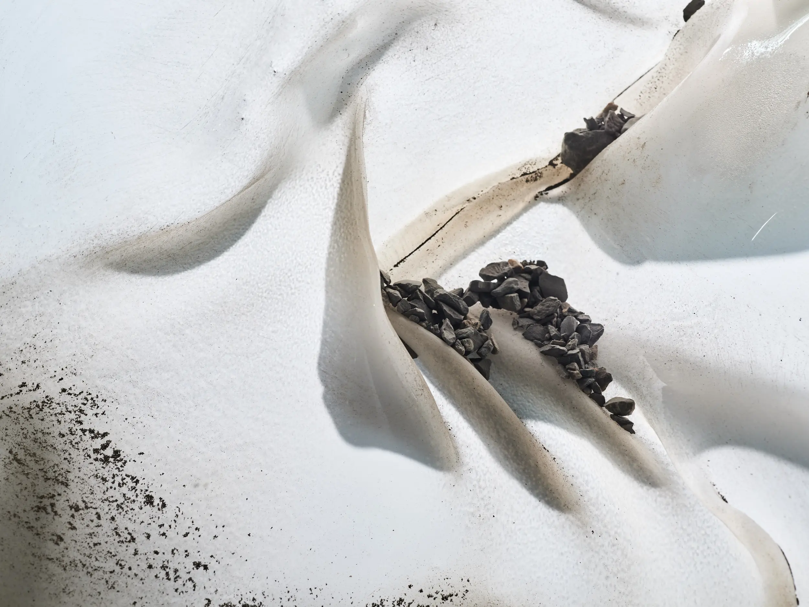

Augmented Ecospheres
Die Gruppe Augmented Ecospheres vereint Wissenschaftler*innen und Künstler*innen aus Komposition, Design, Fotografie, Theater, Performance, Umweltpsychologie, Nachhaltigkeitskommunikation und Transformationsforschung. Gemeinsam erforscht sie mit künstlerischen und vermittelnden Strategien die Gegenwart der Klimakatastrophe - mit dem Ziel, deren Dringlichkeit unmittelbar erfahrbar zu machen.
Das kunstbasierte, transdisziplinäre Forschungsprojekt bewegt sich an der Schnittstelle von Umweltbildung und immersiven Technologien. Im Fokus steht der Klimawandel entlang eines konkreten geografischen Verlaufs: vom Gletschersee Griessseeli unterhalb des Clariden-Gletschers über den Linthkanal bis zum Zürichsee. Thematisiert werden dabei unter anderem Gletscherschwund, tauender Permafrost, veränderte Wasserregime und verschwindende Landschaften. Fragen der Zeitlichkeit spielen eine zentrale Rolle - sowohl durch den Einsatz von Echtzeitmedien als auch durch die Auseinandersetzung mit dem Katastrophischen in einer forschenden, iterativen Praxis.
«Im Griess» ist der erste öffentlich vorgestellte Prototyp des Projekts Augmented Ecospheres (2025-2027), gefördert durch die Digitalisierungsinitiative der Zürcher Hochschulen (DIZH). Er wurde vom 1. - 3. Mai 2026 im Kulturhaus Helferei in Zürich gezeigt und zog in drei Tagen über 1000 Besucher*innen an.
Für Anfragen kontaktieren Sie uns unter info@aug.eco
Die Forschungsgruppe Augmented Ecospheres besteht aus Petra Bättig-Frey (ZHAW), Monica Ursina Jäger (ZHAW), Somara Gantenbein (ZHAW), Patrick Müller (ZHdK), Benjamin Burger (ZHdK), Florian Amoser (ZHdK), Joel De Giovanni (ZHdK), Eva Maria Spreitzer (ZHdK) und Gary Berger (ZHdK).
The Augmented Ecospheres group brings together scientists and artists from composition, design, photography, theatre, performance, environmental psychology, sustainability communication and transformation research. Together, they explore the present reality of the climate crisis through artistic and mediating strategies, with the aim of making its urgency directly tangible.
This arts-based, transdisciplinary research project operates at the intersection of environmental education and immersive technologies. Its focus is the climate crisis along a specific geographical trajectory: from Lake Griess below the Clariden Glacier, along the Linth Canal, to Lake Zurich. Topics addressed include glacial retreat, thawing permafrost, changing water regimes and disappearing landscapes. Questions of temporality play a central role, both through the use of real-time media and through engagement with the catastrophic in an exploratory, iterative practice.
«Im Griess» is the first public prototype of the Augmented Ecospheres project (2025-2027), funded by the Digitalisation Initiative of the Zurich Higher Education Institutions (DIZH). It was presented at Kulturhaus Helferei in Zurich from 1 - 3 May 2026 and attracted over 1,000 visitors in three days.
For inquiries, contact us at info@aug.eco
The Augmented Ecospheres research group consists of Petra Bättig-Frey (ZHAW), Monica Ursina Jäger (ZHAW), Somara Gantenbein (ZHAW), Patrick Müller (ZHdK), Benjamin Burger (ZHdK), Florian Amoser (ZHdK), Joel De Giovanni (ZHdK), Eva Maria Spreitzer (ZHdK) and Gary Berger (ZHdK).